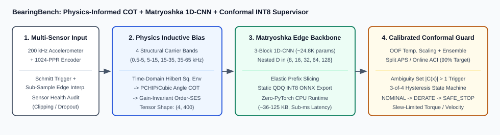
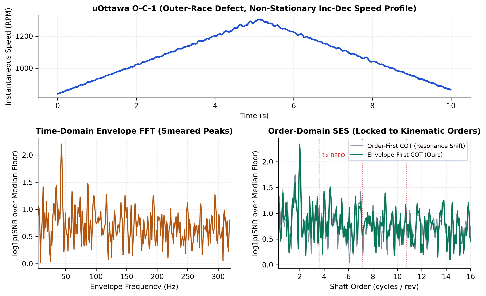
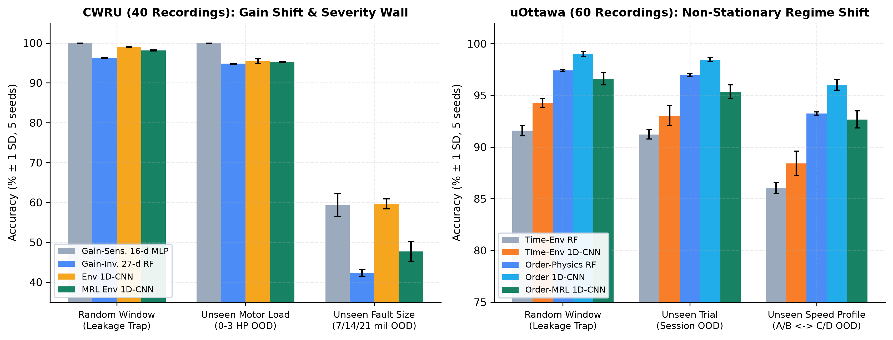
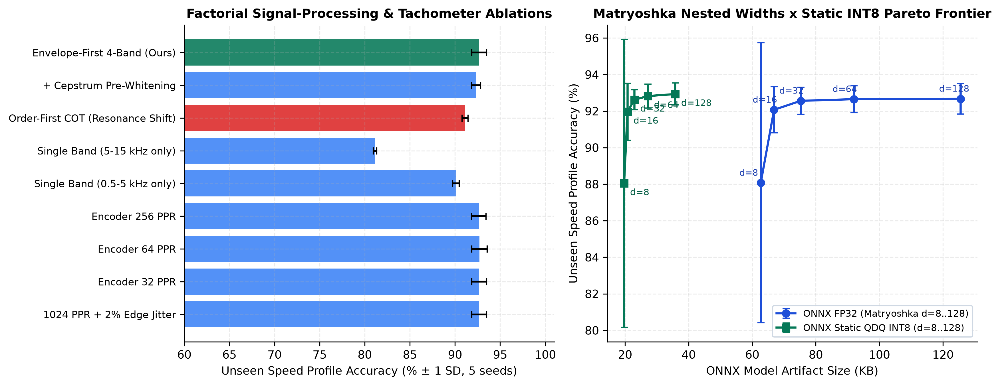
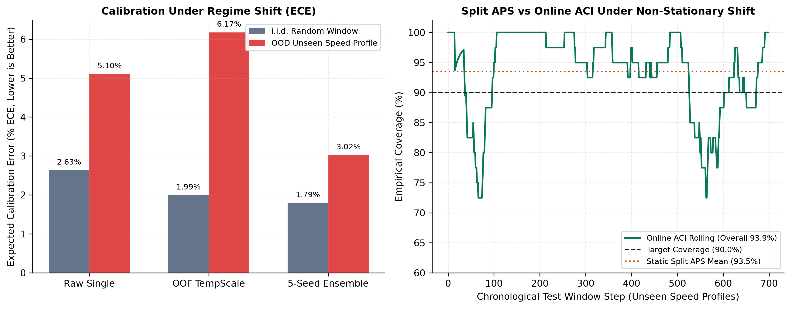
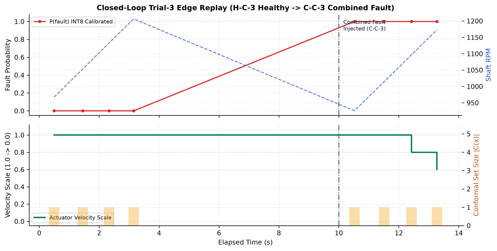

MatryoshkaOrderCNN (d ∈ {8, 16, 32, 64, 128}), static QDQ INT8 ONNX execution, leak-free out-of-fold calibration, 5-seed deep ensembles, and Online Adaptive Conformal Inference (ACI), order-domain CNNs improve uOttawa unseen speed-profile accuracy by +7.61 pp over time-domain envelope CNNs (96.02% vs. 88.41%, 95% CI [+6.61, +8.58] pp, McNemar p < 10-10), while envelope-first COT beats order-first resampling by +1.57 pp (92.67% vs. 91.10%, p = 0.000128). Static QDQ INT8 compresses the d=128 backbone 3.51× to 35.77 KB at 92.93% accuracy (0.1205 ms p50 CPU latency, zero PyTorch runtime) and preserves 88.04% down to d=8 (19.71 KB). Under unseen CWRU spall diameters (7/14/21 mil), all supervised models drop to 47.72%–59.63%, while ID-tuned temperature scaling worsens uOttawa OOD ECE (5.10% → 6.17%), deep ensembles halve OOD ECE to 3.02%, and Online ACI recovers +22.88 pp conformal coverage on CWRU severity shift (50.16% → 73.04%).
Edge monitoring systems for rotating machinery and predictive health sensing require calibrated predictions under kilobyte-level memory budgets when speeds and damage modes shift outside the training distribution. Standard fault-diagnosis papers often split sliding windows randomly across recordings (causing severe temporal leakage), evaluate only constant-speed regimes where spectral peaks remain stationary in Hz, or omit out-of-distribution uncertainty evaluation. BearingBench eliminates these confounds across all 100 real .mat recordings and evaluates every claim over five seeds {7, 19, 42, 73, 101}.

When shaft speed ω(t) accelerates or reverses, fault modulation harmonics smear across Hz frequency bins. Naive order-first COT resamples raw vibration before bandpass filtering, shifting structural resonance bands relative to angular sampling rate. Our envelope-first COT instead (i) bandpass-filters in time across four structural resonance bands (0.5–5, 5–15, 15–35, 35–65 kHz), (ii) takes squared Hilbert envelopes in time, (iii) resamples onto uniform shaft-angle increments (Δθ = 2π/1024 rad) over 2-revolution segments via PCHIP/cubic interpolation, and (iv) extracts median-normalized FFT order spectra x ∈ ℝ4×400.

O-C-1 outer-race fault recording under non-stationary 840 ↔ 1300 RPM profile: time-domain FFT smears peaks across Hz bins whereas envelope-first COT locks SNR peaks cleanly onto shaft orders (k × BPFO).MatryoshkaOrderCNN is a lightweight 3-block 1D-CNN (~24.8K parameters, final channel width 128) trained with uniform nested cross-entropy loss across channel prefixes d ∈ {8, 16, 32, 64, 128}:
SlicedMatryoshkaCNN physically slices the final pointwise convolution kernels and linear head down to prefix width d (real FLOP/parameter reduction), exports opset-18 ONNX graphs, and applies static QDQ INT8 quantization calibrated exclusively on proper-training windows. Deployment via EdgeClassifier runs in single-thread CPU ONNX Runtime with zero PyTorch or scikit-learn dependencies.
Temperature scaling is fit using 2-fold recording-grouped out-of-fold (OOF) logits inside the training partition and benchmarked against 5-seed ensembles via ECE, Brier score, NLL, and selective risk-coverage (AURC). At target coverage 1 − α = 0.90, we compare static Split APS against chronological Online ACI (γ = 0.05) and integrate prediction set ambiguity (|C(x)| > 1), severe fault hysteresis (3-of-4 windows), and hardware sensor clipping/dropout audits into SupervisoryController.
On CWRU, standard ISO 20816-3 RMS velocity thresholds classify 40/40 recordings as Zone A (masking 36/36 faults), whereas our zero-label Median/MAD carrier-band drift score reaches 1.0000 AUROC / 1.0000 AUPRC on CWRU (healthy max 15.94 vs. fault min 44.50) and 0.9097 AUROC / 0.9739 AUPRC on unseen uOttawa reversing profiles (C/D).
| Dataset | Model / Representation | random_window | Unseen Load / Trial | Unseen Size / Speed |
|---|---|---|---|---|
| CWRU (4-cls) | Gain-Sensitive 16-d MLP | 99.98 ± 0.02% | 99.90 ± 0.04% | 59.29 ± 2.90% |
| CWRU (4-cls) | Gain-Invariant 27-d RF | 96.20 ± 0.12% | 94.83 ± 0.10% | 42.32 ± 0.83% |
| CWRU (4-cls) | Env 1D-CNN | 99.00 ± 0.08% | 95.44 ± 0.56% | 59.63 ± 1.22% |
| CWRU (4-cls) | MRL Env 1D-CNN (d=128) | 98.14 ± 0.12% | 95.29 ± 0.15% | 47.72 ± 2.47% |
| uOttawa (5-cls) | Time-Env RF | 91.59 ± 0.50% | 91.22 ± 0.45% | 86.04 ± 0.55% |
| uOttawa (5-cls) | Time-Env 1D-CNN | 94.28 ± 0.43% | 93.05 ± 0.95% | 88.41 ± 1.19% |
| uOttawa (5-cls) | Order-Physics RF (27-d) | 97.42 ± 0.10% | 96.97 ± 0.12% | 93.25 ± 0.16% |
| uOttawa (5-cls) | Order 1D-CNN | 99.00 ± 0.27% | 98.46 ± 0.21% | 96.02 ± 0.52% |
| uOttawa (5-cls) | Order-MRL 1D-CNN (d=128) | 96.60 ± 0.59% | 95.36 ± 0.66% | 92.67 ± 0.83% |

Paired Significance: On pooled 5-seed uOttawa unseen_speed_profile windows, Order-CNN beats Time-Env CNN by +7.61 pp (95% bootstrap CI [+6.61, +8.58] pp, McNemar 305 vs. 39 discordant windows, exact p = 0.0). Per-class recall for the hardest ball fault jumps from 77.97% (Time CNN) to 84.49% (Order CNN; 82.61% Order-MRL). Envelope-first COT also beats Order-first COT by +1.57 pp (95% CI [+0.80, +2.35] pp, McNemar 128 vs. 73, p = 0.000128).
unseen_speed_profile (5 seeds).| Variant | Acc (±SD)% | Ball Rec% |
|---|---|---|
| Envelope-First 4-Band (1024 PPR) | 92.67 ± 0.83 | 82.61 |
| + Cepstrum Pre-Whitening (CPW) | 92.33 ± 0.51 | 80.44 |
| Order-First 4-Band COT | 91.10 ± 0.33 | 78.55 |
| Single Band 0.5–5 kHz only | 90.10 ± 0.36 | 72.03 |
| Single Band 5–15 kHz only | 81.14 ± 0.19 | 60.00 |
| Single Band 15–35 kHz only | 65.49 ± 0.76 | 64.35 |
| Encoder 256 PPR / 64 PPR / 32 PPR | 92.64 / 92.70 / 92.67 | 82.61 |
| 1024 PPR + 2% Edge Timing Jitter | 92.67 ± 0.83 | 82.61 |
| d | Prec | Acc (±SD)% | Size (KB) | p50 (ms) | ECE |
|---|---|---|---|---|---|
| 8 | FP32 | 88.07 ± 7.66 | 62.69 | 0.1549 | 0.1777 |
| 8 | INT8 | 88.04 ± 7.88 | 19.71 | 0.1045 | 0.1802 |
| 16 | FP32 | 92.07 ± 1.26 | 66.88 | 0.4440 | 0.0556 |
| 16 | INT8 | 91.96 ± 1.56 | 20.78 | 0.1908 | 0.0525 |
| 32 | FP32 | 92.56 ± 0.74 | 75.26 | 0.2236 | 0.0260 |
| 32 | INT8 | 92.62 ± 0.55 | 22.92 | 0.2238 | 0.0265 |
| 64 | FP32 | 92.65 ± 0.73 | 92.01 | 0.1143 | 0.0432 |
| 64 | INT8 | 92.82 ± 0.66 | 27.21 | 0.0763 | 0.0425 |
| 128 | FP32 | 92.67 ± 0.83 | 125.52 | 0.1800 | 0.0510 |
| 128 | INT8 | 92.93 ± 0.60 | 35.77 | 0.1205 | 0.0514 |

| Protocol | Raw ECE | OOF TS ECE | 5-Seed Ens ECE | Split APS Cov | Online ACI Cov | ACI Set Size |
|---|---|---|---|---|---|---|
| uOttawa random_window | 2.63% | 1.99% | 1.79% | 97.38% | 97.04% | 1.011 |
| uOttawa unseen_trial | 3.04% | 2.69% | 1.98% | 97.05% | 96.25% | 1.024 |
| uOttawa unseen_speed_profile | 5.10% | 6.17% | 3.02% | 93.53% | 93.93% | 1.070 |
| CWRU unseen_load | 3.13% | 2.38% | 2.05% | 96.88% | 95.71% | 1.016 |
| CWRU unseen_fault_size (7/14/21 mil) | 48.88% | 47.05% | 43.96% | 50.16% | 73.04% | 1.836 |


H-C-3 healthy → C-C-3 combined fault, 8 windows): 0 false derates over healthy reversing speeds (967 → 1206 RPM), transitioning cleanly to latched SAFE_STOP (velocity scale 1.0 → 0.8 → 0.6) at t = 12.43 s.audit_sensors.